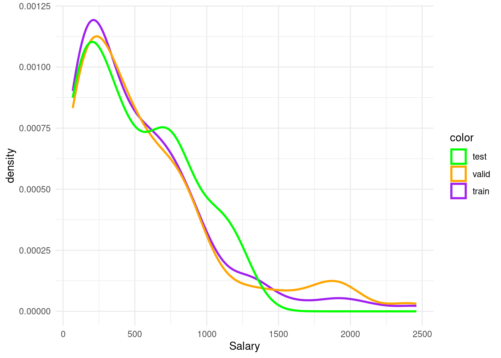

#install.packages("glmnet")
library(tidyverse)
library(dplyr)
library(ggplot2)
library(ISLR)
library(stats)
library(glmnet)
library(tidyverse)
library(caret)4 Linear Regression
4.1 Readings
ISLR:
- Chapter 3.1 - 3.4: Linear Regression (optional)
- Chapter 6.1 through 6.2: Linear Model Selection and Regularization: Subset Selection & Shrinkage Methods
4.2 Simple linear regression
Predicting a quantitative response Y on the basis on a single predictor variable X. We want to estimate the predicted variable of the basis of X, computing the parameter \(\beta\).
\[ \hat{y} = \hat{\beta}_0 + \hat{\beta_1}x + \epsilon \]
For estimating the parameters \(\hat{\beta_0}\) (intercept) and \(\hat{\beta_1}\) (parameter for x) most used method is least squares criterion. Residuals are computed for each ith observed response value minus the ith predicted value by the linear model for sample of size n.
\[ e_i = y_i - \hat{y_i} \]
These residuals are summed up for all i observations to the residual sum of squares (RSS):
\[ RSS = e_1^2 + e_2^2 + \dots + e_n^2 \]
So in sum the formula for RSS: \[ RSS = \sum_{i=1}^{n} (y_i - \hat{y})^2 \]
The least squares approach choose the estimates (\(\beta\)) to minimize the RSS:
\[ \hat{\beta_1} = \frac{\sum_{i=1}^{n} (x_i - \overline{x})(y_i - \overline{y})} {\sum_{i=1}^{n} (x_i - \overline{x})} \] \[ \hat{\beta_0}= \overline{y} - \hat{\beta_1}\overline{x} \] Where \(\overline{x}\) and \(\overline{y}\) re the sample means.
4.3 Multiple linear regressions
extended formula of simple regression:
\[ \hat{y} = \hat{\beta}_0 + \hat{\beta_1}x_1 + \hat{\beta_2}x_2 + \dots +\hat{\beta_p}x_p + \epsilon \]
where Xj represents the jth predictor and βj quantifies the association between that variable and the response. We interpret βj as the average effect on Y of a one unit increase in Xj , holding all other predictors fixed.
Same least squared method for estimating the parameters are used.
Interpreted like this: When we have increase on the x axis by one, there will be an increase on the y axis by coefficent of x1 holding the other variables constant.
Important questions:
- Is at least one of the predictors X1,X2, . . . ,Xp useful in predicting the response?
- Do all the predictors help to explain Y , or is only a subset of the predictors useful?
- How well does the model fit the data?
- Given a set of predictor values, what response value should we predict, and how accurate is our prediction?
4.4 Additive Assumption
Two of the most important assumptions state that the relationship between the predictors and response are additive and linear. The additivity assumption means that the association between a predictor Xj and the response Y does not depend on the values of the other predictors. The linearity assumption states that the change in the response Y associated with a one-unit change in Xj is constant, regardless of the value of Xj . Additive assumption refers to an interaction effect between the variables. One way of extending this model is to include a third predictor, called an interaction term, which is constructed by computing the product of X1 and X2:
\[ Y=\beta_0 + \beta_1x_1 + \beta_2x_2 + \beta_3x_1x_2 + \epsilon \]
The hierarchical principle states that if we include an interaction in a model, we should also include the main effects, even if the p-values associated with their coefficients are not significant. In other words, if the interaction between X1 and X2 seems important, then we should include both X1 and X2 in the model even if their coefficient estimates have large p-values
4.5 polynomial regression for non-linear relationships
simple approach for incorporating non-linear associations in a linear model is to include transformed versions of the predictors. Example is a quadric shape:
\[ Y = \beta_0 + \beta_1x_1 + \beta_2x_2^2 + \epsilon \]
4.6 Accurary of linear regressions
How we can verify, that our parameters fits to the real one? Because samples are always biased, how can we be sure, that our function is accurate?
- Therefore, we compute the standard error, which is the standard deviation of the sample distribution.
- tells us the average amount that an estimate differs from the actual value
- shrinks, the bigger n is
- The bigger the SE, the bigger the insecurity about the parameters
Standard deviation is squared root of variance
\[ \sigma = \sqrt{\frac{1}{N} \sum_{1}^{n} (x_i - \overline{x}_i)^2} \]
Variance: \[ Var(X) = \sigma^2 \]
\[ Var(X) = \frac{1}{N} \sum_{1}^{n} (x_i - \overline{x}_i)^2 \] For estimating standard errors of the parameters to check how near they are to the true values: \[ SE(\hat{\beta_0}^2 = \sigma^2 [\frac{1}{n} + \frac{\overline{x}^2} {\sum_{i=1}^{n} (x_i - \overline{x})^2}] \] \[ SE(\hat{\beta_1}^2 = \frac{\sigma^2} {\sum_{i=1}^{n} (x_i - \overline{x})^2} \] In general \(\sigma^2\) is not known, therefore, we compute the residual standard error: \[ RSE = \sqrt{\frac{RSS}{n-2}} \]
Our goal is to find parameters that minimize the MSE, in doing this: \[ MSE = \frac{1}{n} \sum_{i=1}^{n} (y - \hat{y})^2 \]
4.6.1 cost function for multiple and linear regressions
How to find the optimal θ (the ones that minimize MSE)?
- Option 1: Using algebra
- Option 2: Using gradient descent –> optimization technique used in many machine learning method
We are computing the MSE (see above) with different parameter settings. If the MSE (or the local parameter is \(L_\theta\)) is 0, the model fit perfect the data. For each value of the parameter \(\beta\) or in this case called \(\theta\) we get another MSE. As a result we have a curve for simple regression that looks like this:

The curve is bell-shaped. In the following, we can see how the bell-shaped curve looks like in a graph and how the gradient of the regression (\(h_{\theta}(x)\)) and the function of the parameters are connected with each other:
Standard errors useful for computing confidence intervals. 95 % confidence interval means,that within this interval is a 95 % probability, that this range will contain the true unknown value of the parameter.
Standard errors for hypothesis tests with null hypothesis: \(H_0: \beta_1 = 0\) → model reduced to \(Y = \beta_0 + \epsilon\) → computing a t-statistic:
\[ t= \frac{\hat{\beta_1} - 0} { SE(\hat{\beta_1})} \]
measures the number of standard deviations that \(\hat{\beta_1}\) is away from 0.No relationship, t- distribution with n-2 degrees of freedom. The t-distribution has a bell shape and for values of n greater than approximately 30 it is quite similar to the standard normal distribution.Consequently, it is a simple matter to compute the probability of observing any number equal to |t| or larger in absolute value, assuming β1 = 0. We call this probability the p-value. Roughly speaking, we interpret the p-value as follows: a small p-value indicates that it is unlikely to observe such a substantial association between the predictor and the response due to chance, in the absence of any real association between the predictor and the response.
If the standard deviation is known, we use z statistic insteat of t-statistic.
4.6.2 3 more ways accessing accuracy of the model:
- Residual Standard Error (RSE) an absoulte measure of the lack of fit of the model, so the number has to be seen in context of the values on Y (computed seen above)
- \(R^2\) an alternative measure, takes the form of the proportion of variance explained and and so it always takes on a value between 0 and 1, and is independent of the scale of Y . Computed like this:
\[ R^2 = \frac{TSS - RSS}{TSS} = 1- \frac{RSS}{TSS} \]
Total sum of squares: \[ TSS = \sum (y_i- \overline{y_i})^2 \]
TSS measures the total variance in the response Y , and can be squares thought of as the amount of variability inherent in the response before the regression is performed. In contrast, RSS measures the amount of variability that is left unexplained after performing the regression. Hence, TSS −RSS measures the amount of variability in the response that is explained (or removed) by performing the regression, and R2 measures the proportion of variability in Y that can be explained using X.
Interpretation more easily, because values always lay between 0 and 1.
- F-Statistic only for multiple regression, null-hypothesis testing is not possible, we need to ask whether all of the regression coefficients are zero.
Therefore, F-statistic: \[ F= \frac{(TSS-RSS)/p)}{RSS/(n-p-1)} \] oberhalb des Bruchs: \(H_0\) is true unterhalb des Bruchs: linear model assumptions would be correct. Hence, when there is no relationship between the response and predictors, one would expect the F-statistic to take on a value close to 1. On the other hand, if Ha is true, then E{(TSS − RSS)/p} > σ2, so we expect F to be greater than 1. How large does the F-statistic need to be before we can reject H0 and conclude that there is a relationship? It turns out that the answer depends on the values of n and p. When n is large, an F-statistic that is just a little larger than 1 might still provide evidence against H0. In contrast, a larger F-statistic is needed to reject H0 if n is small. When H0 is true and the errors ϵi have a normal distribution, the F-statistic follows an F-distribution.6 For any given value of n and p, any statistical software package can be used to compute the p-value associated with the F-statistic using this distribution. Based on this p-value, we can determine whether or not to reject H0. The approach of using an F-statistic to test for any association between the predictors and the response works when p is relatively small, and certainly small compared to n. However, sometimes we have a very large number of variables. If p > n then there are more coefficients βj to estimate than observations from which to estimate them. In this case we cannot even fit the multiple linear regression model using least squares, so the Fstatistic cannot be used, and neither can most of the other concepts that we have seen so far in this chapter.
4.7 Potential Problems of linear regression models
- Non-linearity of the response-predictor relationships.
- Correlation of error terms. An important assumption of the linear regression model is that the error terms, ϵ1, ϵ2, . . . , ϵn, are uncorrelated. What does this mean? For instance, if the errors are uncorrelated, then the fact that ϵi is positive provides little or no information about the sign of ϵi+1. The standard errors that are computed for the estimated regression coefficients or the fitted values are based on the assumption of uncorrelated error terms. If in fact there is correlation among the error terms, then the estimated standard errors will tend to underestimate the true standard errors. As a result, confidence and prediction intervals will be narrower than they should be.
- Non-constant variance of error terms. Another important assumption of the linear regression model is that the error terms have a constant variance, Var(ϵi) = σ2. The standard errors, confidence intervals, and hypothesis tests associated with the linear model rely upon this assumption. Unfortunately, it is often the case that the variances of the error terms are non-constant. For instance, the variances of the error terms may increase with the value of the response. One can identify non-constant variances in the errors, or heteroscedasticity, from the presence of a funnel shape in heterothe residual plot.
- Outliers. Residual plots can be used to identify outliers. In this example, the outlier is clearly visible in the residual plot illustrated in the center panel of Figure 3.12. But in practice, it can be difficult to decide how large a residual needs to be before we consider the point to be an outlier. To address this problem, instead of plotting the residuals, we can plot the studentized residuals, computed by dividing each residual ei by its estimated standard studentized error. Observations whose studentized residuals are greater than 3 in abso- residual lute value are possible outliers.
- High-leverage points. We just saw that outliers are observations for which the response yi is unusual given the predictor xi. In contrast, observations with high leverage high have an unusual value for. In order to quantify an observation’s leverage, we compute the leverage statistic. A large value of this statistic indicates an observation with high leverage.
- Collinearity. Collinearity refers to the situation in which two or more predictor variables are closely related to one another.To avoid such a situation, it is desirable to identify and address potentialcollinearity problems while fitting the model. A simple way to detect collinearity is to look at the correlation matrix of the predictors. An element of this matrix that is large in absolute value indicates a pair of highly correlated variables, and therefore a collinearity problem in the data.Unfortunately, not all collinearity problems can be detected by inspection of the correlation matrix: it is possible for collinearity to exist between three or more variables even if no pair of variables has a particularly high correlation. We call this situation multicollinearity. Instead of inspecting the correlation matrix, a better way to assess multi- collinearity is to compute the variance inflation factor (VIF).The smallest possible value for VIF is 1,which indicates the complete absence of collinearity. Typically in practicethere is a small amount of collinearity among the predictors. As a rule of thumb, a VIF value that exceeds 5 or 10 indicates a problematic amount of collinearity.
4.8 Why we need test data?
Why is the MSE from the validation data set so high?
- We have so many models,like in this case over 50,000 models, we are overfitting the validation data.
- We cannot use the same data set for compare the models and test one model
- cross-validation does not have this problem
4.9 Which variables shall I include in my model?
Select only certain variables helps not overfitting the data and the influence of the variables is more easy to interprete.
A very flexible model (one with many coefficients) is like a kid in candyshop with a platinum credit card: It goes around buying all the coefficients it wants and never stops.
Idea: Tell the model not to go overboard with the complexity. We set up the correct complexity as the one that minimizes MSE in the validation data.
- Prediction Accuracy:
Provided that the true relationship between the response and the predictors is approximately linear, the least squares estimates will have low bias. If n > p that is, if n, the number of observations, is much larger than p, the number of variables then the least squares estimates tend to also have low variance, and hence will perform well on test observations. However, if n is not much larger than p, then there can be a lot of variability in the least squares fit, resulting in overfitting and consequently poor predictions on future observations not used in model training. And if p > n, then there is no longer a unique least squares coefficient estimate: the variance is infinite so the method cannot be used at all. By constraining or shrinking the estimated coefficients, we can often substantially reduce the variance at the cost of a negligible increase in bias. This can lead to substantial improvements in the accuracy with which we can predict the response for observations not used in model training.
- Model interpretability: It is often the case that some or many of the variables used in a multiple regression model are in fact not associated with the response. Including such irrelevant variables leads to unnecessary complexity in the resulting model. By removing these variables that is, by setting the corresponding coefficient estimates to zero we can obtain a model that is more easily interpreted. Now least squares is extremely unlikely to yield any coefficient estimates that are exactly zero. In this chapter, we see some approaches for automatically performing feature selection or variable selection that is, for excluding irrelevant variables from a multiple regression model.
Approaches, that have better prediction accuracy and model interpretability than least squares method:
4.10 Subset Selection
- identifying a subset of the p predictors that we believe to be related to the response. We then fit a model using least squares on the reduced set of variables
Restrict the number of predictors (kid is allowed only to choose 3 candies)
Pick the best p predictors
How, with the MSE training data set, not the validation data set, because: we do not waste our validation set, because we need this to evaluate the best model in the next step, training data set has the same complexity
How to do constrain the complexity of the model? There are different methods:
Best subset selection
- fit a separate least squares regression for each possible combination of the p predictors
- which model is the best? The one with the smallest RSS or largest \(R^2\).
- starts with a null model for all predictors and then compares all models with each other - in the next step the best model is chosen - then the model need to be validated with crossvalidation or the validation data set - In the case of logistic regression, instead of ordering models by RSS in Step 2 we instead use the deviance, a measure deviance that plays the role of RSS for a broader class of models. The deviance is negative two times the maximized log-likelihood; the smaller the deviance, the better the fit - not handy for very large p because if p = 10, we would have 1000 possible models and for p =200 over a million
That is because often this is done:
Forward stepwise selection
- best alternative to best subset selection
- Forward stepwise selection begins with a model containing no predictors, and then adds predictors to the model, one-at-a-time, until all of the predictors are in the model.
- at each step the variable that gives the greatest additional improvement to the fit is added to the model is added
- if p= 20 only 211 models have to be computed
- first step, the null model
- second: consider all models at the moment in comparison to a model where an additional predictor is added
- choose the best model among these models
- select the best model and using cross validation or the validation data set
- Though forward stepwise tends to do well in practice, it is not guaranteed to find the best possible model out of all 2p models containing subsets of the p predictors. For instance, suppose that in a given data set with p = 3 predictors, the best possible one-variable model contains X1, and the best possible two-variable model instead contains X2 and X3. Then forward stepwise selection will fail to select the best possible two-variable model, because M1 will contain X1, so M2 must also contain X1 together with one additional variable
Backward stepwise selection
- similar to forward selection, only the other way around
- n needs to be larger than p, so a full model can be fitted.
Advantages and Disadvantages
- all models are compared with each other
- not feasible, lot of computations
- forward selection (start with an empty model and add one by one)
- faster
- not sure, that you find the best model, because not all models are compared and only the one is chosen, which was better than the one before, so the interactions between possible predictors are not integrated → stack local minima
- backward selection (full model and remove one by one)
- faster
- stack local minima
- if you have more predictors than observations we cannot start with the full model, so if p > n we cannot use it
Backward and forward is not that good in finding the truth than the best subset solution → it is especially a problem if you want to infer, because in this case truth is more important than in predictions
Now we have for all the models computed the MSE in one of three ways we use the validation set to identify, which model is outside this comparisons the best. So not biased by the comparisons, we compute the MSE with the validation set again.
For each selection same procedure:
For each level of complexity (number of predictors): Fit x models of equal complexity –> Keep the best using e.g. MSE or R2 Estimate E(MSE) for models of different complexity using cross-validation –> Select best model Estimate E(MSE) of the best model using test data
Cp, AIC, BIC, and Adjusted R2
If we do not have data for validation, - that would be the preferable way- we can estimate tht test error my making an adjustment to the training error to account for the bias due to overfitting.
Cp as unbiased estimate of the test MSE
\[ C_p = \frac{1}{n}(RSS + 2d\sigma^2) \]
\(\sigma^2\) is a estimate of the variance of the error \(\epsilon\). Typically ˆσ2 is estimated using the full model containing all predictors. As a consequence, the Cp statistic tends to take on a small value for models with a low test error, so when determining which of a set of models is best, we choose the model with the lowest Cp value.
AIC Akaike information criterion for a large class of models fit by maximum likelihood
\[ AIC = \frac{1}{n}(RSS + 2d\sigma^2) \] Hence for least squares models, Cp and AIC are proportional to each other.
BIC Bayesian information criterion (BIC) \[ BIC = \frac{1}{n}(RSS + log(n)d\sigma^2) \] from Bayesian point of view. Like Cp, the BIC will tend to take on a small value for a model with a low test error, and so generally we select the model that has the lowest BIC value. BIC statistic generally places a heavier penalty on models with many variables, and hence results in the selection of smaller models than C
Adjusted R \[ Adbjusted R^2 = = 1- \frac{RSS/(n-d-1)}{TSS/(n-d-1)} \] Since RSS always decreases as more variables are added to the model, the R2 always increases as more variables are added.a large value of adjusted R2 indicates a model with a small test error. The intuition behind the adjusted R2 is that once all of the correct variables have been included in the model, adding additional noise variables will lead to only a very small decrease in RSS.
why validation and crossvalidation is better:
This procedure has an advantage relative to AIC, BIC, Cp, and adjusted R2, in that it provides a direct estimate of the test error, and makes fewer assumptions about the true underlying model. It can also be used in a wider range of model selection tasks, even in cases where it is hard to pinpoint the model degrees of freedom (e.g. the number of predictors in the model) or hard to estimate the error variance \(\sigma^2\).
For more precision, we can use the one-standard-error rule. We first calculate standard error of the estimated test MSE for each model size, and then select the smallest model for which the estimated test error is within one standard error of the lowest point on the curve. The rationale here is that if a set of models appear to be more or less equally good, then we might as well choose the simplest model that is, the model with the smallest number of predictors.
4.10.1 in R
Best Subset
#generate all formuals for a data set and the predicted outcome
# Input :
# p : number of variables
# x_vars : character vector of x vars
# y_var : character of y var
generate_formulas <- function(p, x_vars, y_var) {
# Input checking
if (p %% 1 != 0) stop("Input an integer n")
if (p > length(x_vars)) stop("p should be smaller than number of vars")
if (!is.character(x_vars)) stop("x_vars should be a character vector")
if (!is.character(y_var)) stop("y_vars should be character type")
# combn generates all combinations, apply turns them into formula strings
apply(combn(x_vars, p), 2, function(vars) {
paste0(y_var, " ~ ", paste(vars, collapse = " + "))
})
}
#all formulas with e.g. 1 and 2 predictors
formulas_1 <- generate_formulas(p = 1, x_vars = x_vars, y_var = "Salary")
formulas_2 <- generate_formulas(p = 2, x_vars = x_vars, y_var = "Salary")
# Initialise a vector we will fill with MSE values
mses_1 <- rep(0, length(formulas_1))
mses_2 <- rep(0, length(formulas_2))
# loop over all the formulas
for (i in 1:length(formulas_1)) {
mses_1[i] <- lm_mse(as.formula(formulas_1[i]), baseball_train, baseball_valid)
}
for (i in 1:length(formulas_2)) {
mses_2[i] <- lm_mse(as.formula(formulas_2[i]), baseball_train, baseball_valid)
}
# Compare mses, output is the MSE
min(mses_1)
min(mses_2)
# extract the best formula out of it, in this case, the model with 2 p wins, output is the forumla
formulas_2[which.min(mses_2)]
# estimate then the model and calculate the mse
lm_best <- lm(Salary ~ Walks + CAtBat, baseball_train)
mse <- function(y_true, y_pred) mean((y_true - y_pred)^2)
mse(baseball_test$Salary, predict(lm_best, newdata = baseball_test))Backward
# start with a full model
full_model <- lm(MntWines ~ ., data = train_data)
# step backward
step(full_model, direction = "backward")Forward
library(leaps)
regfit_fwd = regsubsets(Salary~., data = Hitters, nvmax = 19, method = "forward")
summary(regfit_fwd)4.11 Shrinkage, Regularization
This approach involves fitting a model involving all p predictors. However, the estimated coefficients are shrunken towards zero relative to the least squares estimates. This shrinkage (also known as regularization) has the effect of reducing variance. Depending on what type of shrinkage is performed, some of the coefficients may be estimated to be exactly zero. Hence, shrinkage methods can also perform variable selection.
Restrict the number, which model is accurate (the kid is given only 3 dollar) Constrain the sum of squared cofficients (L2) or absolute sum of coefficients (L1) to be below s How: Adapt the loss function (e.g. MSE) to penalize including variables
We want to fit the training data (estimate the weights of the coefficients) Make the model behave ‘regularly’ by penalizing the purchase of ‘too many’ coefficients Extremely efficient way to approximately solve the best subset problem: Variable selection + regression in one step Often yields very good results If you are interested in prediction and not inference (i.e. if identifying the relevant features is not a primary goal of the analysis), regularization will usually be better
Shrinking penalty means, when the parameters/ coefficients are close to zero, it is shrinking them down to zero.
4.11.1 Ridge regression
limits the size of the coefficients by adding an L1 penalty equal to the absolute value of the magnitude of coefficients, none of the coefficients are set to zero
Ridge regression’s advantage over least squares is rooted in the bias-variance trade-off. As \(\lambda\) increases, the flexibility of the ridge regression fit decreases, leading to decreased variance but increased bias.But as λ increases, the shrinkage of the ridge coefficient estimates leads to a substantial reduction in the variance of the predictions, at the expense of a slight increase in bias.
Ridge regression is very similar to least squares, except that the coefficients are estimated by minimizing a slightly different quantity. In particular, the ridge regression coefficient estimates the \(\hat{\beta}^R\) are the values that minimize where \(\lambda \ge 0\) is a tuning parameter, to be determined separately. The tuning parameter λ serves to control the relative impact of these two terms on the regression coefficient estimates. When λ = 0, the penalty term has no effect, and ridge regression will produce the least squares estimates. However, as λ→∞, the impact of the shrinkage penalty grows, and the ridge regression coefficient estimates will approach zero.
If we increase lambda, we have a higher penality and in conclusion, we have smaller coefficients and a simpler model and in conclusion have less variance and more bias.Hence, ridge regression works best in situations where the least squares estimates have high variance. Ridge regression also has substantial computational advantages over best subset selection, which requires searching through 2p models. As we discussed previously, even for moderate values of p, such a search can be computationally unfeasible. In contrast, for any fixed value of λ, ridge regression only fits a single model, and the model-fitting procedure can be performed quite quickly. In fact, one can show that the computations required to solve, simultaneously for all values of λ, are almost identical to those for fitting a model using least squares
Penalization as shrinkage to zero:
If λ = 0 we have the least squared fit, if λ is sufficiently large, we have a null model, where each parameter is near to 0 (Ridge) or set to (Lasso) zero.
Here we can see the connection of increasing lambda and how the coefficients, in this case Income, Limit, Rating and Student behave, if lambda increases: The left hand panel shows the connection between an increasing lambda and the value of of the standardized coefficient. If λ = 0 we have the least squared and the coefficients are very high. If λ increases, the ridge coefficient estimate shrinks to zero.
On the right hand panel the connection between the standardized coefficient is shown in relation to another value: It is a measure of the estimated parameter with least squares in connection with the penalty. The x-axis ranges from 1 (where λ = 0) to 0 () \(\lambda = \infty\). The x-axis shows the amount that the ridge regression coefficent estimates have been shrunken towards zero → a small value indicates that they have been shrunken very close to zero,
4.11.2 How to select λ
Both methods need the tuning parameter λ or the value of constraint s.
- Option
- Divide the data into train/val/test
- Create models using different λ, fit them using the train data.
- Estimate E(MSE) in the validation data and select the best model.
- Estimate prediction error for the best model in the test datast.
- Option (better):
- Divide the data into train/test
- Use cross-validation, for each k split of train –> train/val:
- Create models using different λ.
- Estimate E(MSE) in the validation dataset
- Select the model with the minimum average MSE.
- Estimate prediction error in the test data
4.11.3 Lasso regression
try to minimize the sum of the coefficients and the MSE, R^2, a lot of coefficients are removed → huge advantage, because ridge regression include all p predictors in the final model. Although the penalty \(\lambda * \sum_{j>0} \theta_i^2\) of Ridge shrink all coefficients towards zero, it will not set any of them exactly to zero (unless \(\lambda = \infty\)).
→ Ridge including all predictors not a problem for model accuracy but for interpretability. Increasing the value of λ will tend to reduce the magnitudes of the coefficients, but will not result in exclusion of any of the variables.
Bccause of that: Lasso was invented, similar to ridge. Only withouth the square. As with ridge regression, the lasso shrinks the coefficient estimates towards zero. However, in the case of the lasso, the ℓ1 penalty has the effect of forcing some of the coefficient estimates to be exactly equal to zero when the tuning parameter λ is sufficiently large.
→ Lasso in advantage to Ridge: also performs variable selection, Lasso yields sparse models, only a subset of variables. Seen in the figure above, Lasso will have less predictors with a lower lambda.
Why has Lasso a variable selection?
- Least square solution \(\hat{\beta}\).
- Blue areas constrains for left Lasso and right panel Ridge
- red elipses, contours of the RSS, all points in one conture circle have the same RSS value
- when we perform lasso and ridge, we are trying to find the set of coefficient estimates that lead to the smallest RSS, subject to the constraint that there is a budget how large s (the variance, that determine S) can be
- lasso and ridge regression coefficient estimates are given by the first point at which an ellipse contacts the constraint region
- Since ridge regression has a circular constraint with no sharp points, this intersection will not generally occur on an axis, and so the ridge regression coefficient estimates will be exclusively non-zero. However, the lasso constraint has corners at each of the axes, and so the ellipse will often intersect the constraint region at an axis. When this occurs, one of the coefficients will equal zero.
Lasso or Ridge? Which has the better predictions?
neither ridge regression nor the lasso will universally dominate the other. In general, one might expect the lasso to perform better in a setting where a relatively small number of predictors have substantial coefficients, and the remaining predictors have coefficients that are very small or that equal zero. Ridge regression will perform better when the response is a function of many predictors, all with coefficients of roughly equal size. However, the number of predictors that is related to the response is never known a priori for real data sets. A technique such as cross-validation can be used in order to determine which approach is better on a particular data set.
In R:
#Lasso fit <- glmnet(x, y, alpha = 1, lambda = 1.5)
#Ridge fit <- glmnet(x, y, alpha = 0, lambda = 1.5)
4.11.4 Standardization of predictors
is really important, set them to the same size makes a huge difference if for example temperature is measured with Fahrenheit or Celsius.
The parameters has to be scale equivalent. For instance, consider the income variable, which is measured in dollars. One could reasonably have measured income in thousands of dollars, which would result in a reduction in the observed values of income by a factor of 1,000. Now due to the sum of squared coefficients term in the regression formulation, such a change in scale will not simply cause the ridge regression coefficient estimate for income to change by a factor of 1,000. In other words, \(X_i \hat{\beta_i\lambda}\) will depend not only on the value of λ, but also on the scaling of the jth predictor.
Consequently, all of the standardized predictors will have a standard deviation of one. As a result the final fit will not depend on the scale on which the predictors are measured.
4.12 in R
library(glmnet)
# We need to input a predictor matrix x and a response (outcome) variable y, as well as a family = "gaussian" . Generate the input matrix:
x_train <- model.matrix(Salary ~ ., data = baseball_train)
result <- glmnet(x = x_train[, -1], # X matrix without intercept
y = baseball_train$Salary, # Salary as response
family = "gaussian", # Normally distributed errors
alpha = 1, # LASSO penalty, if its set to 0 ridge regression
lambda = 15) # Penalty value
# extract coefficients out of the beta element
rownames(coef(result))[which(coef(result) != 0)]
# tuninng lamda without assigning a lambda will give you an object that contains sets of coefficients for different values of lambda
#determine the lambda value using k-fold cross validation
x_cv <- model.matrix(Salary ~ ., bind_rows(baseball_train, baseball_valid))[, -1]
result_cv <- cv.glmnet(x = x_cv, y = c(baseball_train$Salary, baseball_valid$Salary), nfolds = 15) # setting the k to 15
best_lambda <- result_cv$lambda.min
#the output best lambda gives you the value of the tuning parameterIn this practical, you will learn how to handle many variables with regression by using variable selection techniques, shrinkage techniques, and how to tune hyper-parameters for these techniques. This practical has been derived from chapter 6 of ISLR. In addition, you will need for loops (see also the Basics: For Loops tab on the course website under week 3), data manipulation techniques from Dplyr, and the caret package (see lab week 3) to create a training, validation and test split for the used dataset
Another package we are going to use is glmnet. For this, you will probably need to install.packages("glmnet") before running the library() functions.
4.13 Best subset selection
Our goal is to to predict Salary from the Hitters dataset from the ISLR package. In this at home section, we will do the pre-work for best-subset selection. During the lab, we will continue with the actual best subset selection. First, we will prepare a dataframe baseball from the Hitters dataset where you remove the baseball players for which the Salary is missing. Use the following code:
baseball <- Hitters %>% filter(!is.na(Salary))We can check how many baseball players are left using:
nrow(baseball)[1] 263- Create
baseball_train(50%),baseball_valid(30%), andbaseball_test(20%) datasets using thecreateDataPartition()function of thecaretpackage.
- Create
# define the training partition
train_index <- createDataPartition(baseball$Salary, p = .5,
list = FALSE,
times = 1)
# split the data using the training partition to obtain training data
baseball_train <- baseball[train_index,]
## remainder of the split is the validation and test data (still) combined
baseball_val_test <- baseball[-train_index,]
# split the remaining 50% of the data in a validation and test set
val_index <- createDataPartition(baseball_val_test$Salary, p = .6,
list = FALSE,
times = 1)
baseball_valid <- baseball_val_test[val_index,]
baseball_test <- baseball_val_test[-val_index,]
# Outcome of this section is that the data (100%) is split into:
# training (~50%)
# validation (~30%)
# test (~20%)- Using your knowledge of
ggplotfrom lab 2, plot the salary information of the train, validate and test groups usinggeom_histogram()orgeom_density()
- Using your knowledge of
hist <- ggplot()+
geom_density(data= baseball_train, aes(x=Salary, color= "p"), size=1, alpha=0.2)+
geom_density(data= baseball_valid, aes(x=Salary, color="o"), size=1)+
geom_density(data= baseball_test, aes(x=Salary, color="g"), size=1)+
scale_color_manual(name= "color", values=c("p" = "purple", "o" = "orange", "g" = "green"), labels=c("test", "valid", "train"))+
theme_minimal()Warning: Using `size` aesthetic for lines was deprecated in ggplot2 3.4.0.
ℹ Please use `linewidth` instead.hist
We will use the following function which we called lm_mse() to obtain the mse on the validation dataset for predictions from a linear model:
lm_mse <- function(formula, train_data, valid_data) {
y_name <- as.character(formula)[2]
y_true <- valid_data[[y_name]]
lm_fit <- lm(formula, train_data)
y_pred <- predict(lm_fit, newdata = valid_data)
mean((y_true - y_pred)^2)
}Note that the input consists of (1) a formula, (2) a training dataset, and (3) a test dataset.
- Try out the function with the formula
Salary ~ Hits + Runs, usingbaseball_trainandbaseball_valid.
lm_mse(Salary ~Hits + Runs, baseball_train, baseball_valid)[1] 192681.2We have pre-programmed a function for you to generate a character vector for all formulas with a set number of p variables. You can load the function into your environment by sourcing the .R file it is written in:
generate_formulas <- function(p, x_vars, y_var) {
# Input checking
if (p %% 1 != 0) stop("Input an integer n")
if (p > length(x_vars)) stop("p should be smaller than number of vars")
if (!is.character(x_vars)) stop("x_vars should be a character vector")
if (!is.character(y_var)) stop("y_vars should be character type")
# combn generates all combinations, apply turns them into formula strings
apply(combn(x_vars, p), 2, function(vars) {
paste0(y_var, " ~ ", paste(vars, collapse = " + "))
})
}You can use it like so:
generate_formulas(p = 2, x_vars = c("x1", "x2", "x3", "x4"), y_var = "y")[1] "y ~ x1 + x2" "y ~ x1 + x3" "y ~ x1 + x4" "y ~ x2 + x3" "y ~ x2 + x4"
[6] "y ~ x3 + x4"- Create a character vector of all predictor variables from the
Hittersdataset.colnames()may be of help. Note thatSalaryis not a predictor variable.
pred_vec <- colnames(Hitters)
pred_vec <- pred_vec[!pred_vec %in% "Salary"] %>% as.character()
pred_vec [1] "AtBat" "Hits" "HmRun" "Runs" "RBI" "Walks"
[7] "Years" "CAtBat" "CHits" "CHmRun" "CRuns" "CRBI"
[13] "CWalks" "League" "Division" "PutOuts" "Assists" "Errors"
[19] "NewLeague"- Using the function
generate_formulas()(which is inlcuded in your project folder for lab week 4), generate all formulas with as outcomeSalaryand 3 predictors from theHittersdata. Assign this to a variable calledformulas. There should be 969 elements in this vector.
formulas <- generate_formulas(p = 3, x_vars = pred_vec, y_var = "Salary")At home, you created the baseball dataframe which contains a subset Hitters dataset of the ISLR package: only the rows of the Hitters dataset for which the information on Salary is complete. In addtion, you divided the baseball dataset into a train, validation and test split, and generated all formulas with as outcome Salary and 3 predictors from the Hitters data. Now, within the lab, we are going to find the best set of 3 predictors in the Hitters dataset.
- Use a
for loopto find the best set of 3 predictors in theHittersdataset based on MSE. Use thebaseball_trainandbaseball_validdatasets.
When creating the for loop, use the function as.formula() from the stats package to loop over all the equations contained in formulas. as.formula() transforms the characters of the input to a formula, so we can actually use it as a formula in our code.
To select the best formula with the best MSE, use the function which.min(), which presents the lowest value from the list provided.
#create a vector , we will fill fill with MSE values
mses <- rep(0,969)
# loop over all the formulas
#we want to loop the lm for i model in one of 969 formuals
# mses[i] is the reference to the vector we store the calculations for i in
# lm_mse is our function
# formulas[i] refers to one variation of the formukla
# then the data set added
for(i in 1:969){
mses[i] <- lm_mse(as.formula(formulas[i]), baseball_train, baseball_valid)
}
# extract the minimal:
best_3_preds <- formulas[which.min(mses)]
best_3_preds[1] "Salary ~ Hits + CRBI + Division"- Do the same for 1, 2 and 4 predictors. Now select the best model from the models with the best set of 1, 2, 3, or 4 predictors in terms of its out-of-sample MSE
formula1 <- generate_formulas(p = 1, x_vars = pred_vec, y_var = "Salary")
formula2 <- generate_formulas(p = 2, x_vars = pred_vec, y_var = "Salary")
formula4 <- generate_formulas(p = 4, x_vars = pred_vec, y_var = "Salary")
mses1 <- rep(0,19)
for(i in 1:19){
mses1[i] <- lm_mse(as.formula(formula1[i]), baseball_train, baseball_valid)
}
best_1_preds <- formulas[which.min(mses1)]
mses2 <- rep(0,171)
for(i in 1:171){
mses2[i] <- lm_mse(as.formula(formula2[i]), baseball_train, baseball_valid)
}
best_2_preds <- formulas[which.min(mses2)]
mses4 <- rep(0,3876)
for(i in 1:3876){
mses4[i] <- lm_mse(as.formula(formula4[i]), baseball_train, baseball_valid)
}
best_4_preds <- formulas[which.min(mses4)]
min(mses)
min(mses1)
min(mses2)
min(mses4)[1] 121754.9
[1] 163444.9
[1] 131244.8
[1] 115821.2- Calculate the test MSE for the model with the best number of predictors.
- Using the model with the best number of predictors, create a plot comparing predicted values (mapped to x position) versus observed values (mapped to y position) of
baseball_test.
- Using the model with the best number of predictors, create a plot comparing predicted values (mapped to x position) versus observed values (mapped to y position) of
Through enumerating all possibilities, we have selected the best subset of at most 4 non-interacting predictors for the prediction of baseball salaries. This method works well for few predictors, but the computational cost of enumeration increases quickly to the point where it is not feasible to enumerate all combinations of variables:
4.14 Regularization with glmnet
glmnet is a package that implements efficient (quick!) algorithms for LASSO and ridge regression, among other things.
- Skim through the help file of
glmnet. We are going to perform a linear regression with normal (gaussian) error terms. What format should our data be in?
?glmnetstarting httpd help server ... doneAgain, we will try to predict baseball salary, this time using all the available variables and using the LASSO penalty to perform subset selection. For this, we first need to generate an input matrix.
- First generate the input matrix using (a variation on) the following code. Remember that the “.” in a formula means “all available variables”. Make sure to check that this
x_trainlooks like what you would expect.
x_train <- model.matrix(Salary ~ ., data = baseball_train)
head(x_train) (Intercept) AtBat Hits HmRun Runs RBI Walks Years CAtBat CHits
-Alan Ashby 1 315 81 7 24 38 39 14 3449 835
-Alvin Davis 1 479 130 18 66 72 76 3 1624 457
-Andre Dawson 1 496 141 20 65 78 37 11 5628 1575
-Al Newman 1 185 37 1 23 8 21 2 214 42
-Argenis Salazar 1 298 73 0 24 24 7 3 509 108
-Andres Thomas 1 323 81 6 26 32 8 2 341 86
CHmRun CRuns CRBI CWalks LeagueN DivisionW PutOuts Assists
-Alan Ashby 69 321 414 375 1 1 632 43
-Alvin Davis 63 224 266 263 0 1 880 82
-Andre Dawson 225 828 838 354 1 0 200 11
-Al Newman 1 30 9 24 1 0 76 127
-Argenis Salazar 0 41 37 12 0 1 121 283
-Andres Thomas 6 32 34 8 1 1 143 290
Errors NewLeagueN
-Alan Ashby 10 1
-Alvin Davis 14 0
-Andre Dawson 3 1
-Al Newman 7 0
-Argenis Salazar 9 0
-Andres Thomas 19 1Intercept is one.
The model.matrix() function takes a dataset and a formula and outputs the predictor matrix where the categorical variables have been correctly transformed into dummy variables, and it adds an intercept. It is used internally by the lm() function as well!
- Using
glmnet(), perform a LASSO regression with the generatedx_trainas the predictor matrix andSalaryas the response variable. Set thelambdaparameter of the penalty to 15. NB: Remove the intercept column from thex_matrix–glmnetadds an intercept internally.
result <- glmnet(x = x_train[, -1], # X matrix without intercept
y = baseball_train$Salary, # Salary as response
family = "gaussian", # Normally distributed errors
alpha = 1, # LASSO penalty
lambda = 15) # Penalty value- The coefficients for the variables are in the
betaelement of the list generated by theglmnet()function. Which variables have been selected? You may use thecoef()function.
Extract all coefficients, without the coefficients that set to zeor.
rownames(coef(result))[which(coef(result) !=0)] [1] "(Intercept)" "Hits" "Walks" "CHmRun" "CRuns"
[6] "CRBI" "DivisionW" "PutOuts" "Assists" "NewLeagueN" - Create a predicted versus observed plot for the model you generated with the
baseball_validdata. Use thepredict()function for this! What is the MSE on the validation set?
x_valid <- model.matrix(Salary ~ ., data = baseball_valid)[,-1]
y_pred <- as.numeric(predict(result, newx = x_valid))
?Hitters
tibble(Predicted = y_pred, Observed = baseball_valid$Salary) %>%
ggplot(aes(x = Predicted, y = Observed)) +
geom_point() +
geom_abline(slope = 1, intercept = 0, lty = 2) +
theme_minimal() +
labs(title = "Predicted versus observed salary")
mse <- function(y_true, y_pred) {
mean((y_true - y_pred)^2)
}
mse(baseball_valid$Salary, y_pred)[1] 127722.94.15 Tuning lambda
Like many methods of analysis, regularized regression has a tuning parameter. In the previous section, we’ve set this parameter to 15. The lambda parameter changes the strength of the shrinkage in glmnet(). Changing the tuning parameter will change the predictions, and thus the MSE. In this section, we will select the tuning parameter based on out-of-sample MSE.
- Fit a LASSO regression model on the same data as before, but now do not enter a specific
lambdavalue. What is different about the object that is generated? Hint: use thecoef()andplot()methods on the resulting object.
- Fit a LASSO regression model on the same data as before, but now do not enter a specific
result_nolambda <- glmnet(x = x_train[, -1], y = baseball_train$Salary,
family = "gaussian", alpha = 1)
# This object contains sets of coefficients for different values of lambda,
# i.e., different models ranging from an intercept-only model (very high
# lambda) to almost no shrinkage (very low lambda).
plot(result_nolambda)
- To help you interpret the obtained plot, Google and explain the qualitative relationship between L1 norm (the maximum allowed sum of
coefs) andlambda.
- To help you interpret the obtained plot, Google and explain the qualitative relationship between L1 norm (the maximum allowed sum of
For deciding which value of lambda to choose, we could work similarly to what we have don in the best subset selection section before. However, the glmnet package includes another method for this task: cross validation.
- Use the
cv.glmnetfunction to determine thelambdavalue for which the out-of-sample MSE is lowest using 15-fold cross validation. As your dataset, you may use the training and validation sets bound together with bind_rows(). What is the best lambda value?
Note You can remove the first column of the model.matrix object, which contains the intercept, for use in cv.glmnet. In addition, To obtain the best lambda value, you can call the output value lambda.min from the object in which you stored the results of calling cv.glmnet.
x_cv <- model.matrix(Salary ~ ., bind_rows(baseball_train, baseball_valid))[, -1]
result_cv <- cv.glmnet(x = x_cv, y = c(baseball_train$Salary, baseball_valid$Salary), nfolds = 15)
best_lambda <- result_cv$lambda.min
best_lambda[1] 3.04876- Try out the plot() method on this object. What do you see? What does this tell you about the bias-variance tradeoff?
plot(result_cv)
the MSE is high with very small values of lambda (no shrinkage) and with very large values of lambda (intercept-only model). introducing a bit of bias lowers the variance relatively strongly (fewer variables in the model) and therefore the MSE is reduced.
It should be noted, that for all these previous exercises they can also be completed using the Ridge Method which is not covered in much depth during this practical session. To learn more about this method please refer back Section 6.2 in the An Introduction to Statistical Learning Textbook.
4.16 Comparing methods (advanced)
This last exercise is optional. You can also opt to view the answer when made available and try to understand what is happening in the code.
- Create a bar plot comparing the test set (baseball_test) MSE of (a) linear regression with all variables, (b) the best subset selection regression model we created, (c) LASSO with lambda set to 50, and (d) LASSO with cross-validated lambda. As training dataset, use the rows in both the
baseball_trainandbaseball_valid
# create this new training dataset and the test dataset
train_data <- bind_rows(baseball_train, baseball_valid)
x_test <- model.matrix(Salary ~ ., data = baseball_test)[, -1]
# generate predictions from the models
y_pred_ols <- predict(lm(Salary ~ ., data = train_data), newdata = baseball_test)
y_pred_sub <- predict(lm(Salary ~ Runs + CHits + Division + PutOuts, data = train_data),
newdata = baseball_test)
# these two use x_cv from the previous exercises
y_pred_las <- as.numeric(predict(glmnet(x_cv, train_data$Salary, lambda = 50), newx = x_test))
y_pred_cv <- as.numeric(predict(result_cv, newx = x_test, s = best_lambda))
# Calculate MSEs
mses <- c(
mse(baseball_test$Salary, y_pred_ols),
mse(baseball_test$Salary, y_pred_sub),
mse(baseball_test$Salary, y_pred_las),
mse(baseball_test$Salary, y_pred_cv)
)
# Create a plot
tibble(Method = as_factor(c("lm", "subset", "lasso", "cv_las")), MSE = mses) %>%
ggplot(aes(x = Method, y = MSE, fill = Method)) +
geom_bar(stat = "identity", col = "black") +
theme_minimal() +
theme(legend.position = "none") +
labs(title = "Comparison of test set MSE for different prediction methods") +
scale_fill_viridis_d() # different colour scale4.17 Conclusions
- By using feature selection or regularization, we can obtain better prediction accuracy and model interpretability
- Feature selection includes best subset, forward and backward selection
- Best subset selection performs best, but it comes at a prize Regularization includes LASSO and Ridge
- LASSO shrinks unimportant parameters to truly zero, while Ridge shrinks them to small values